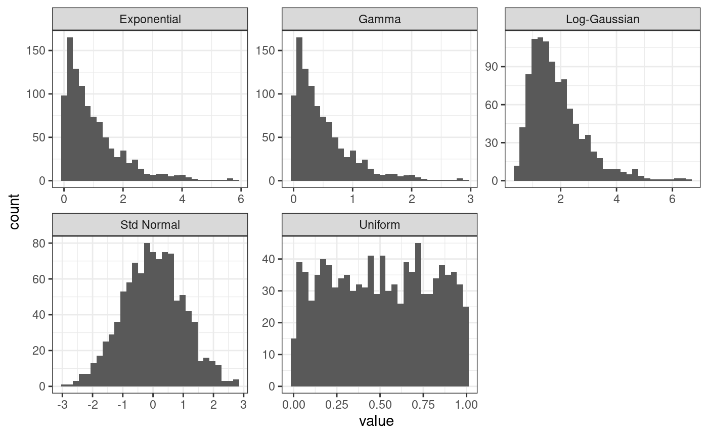
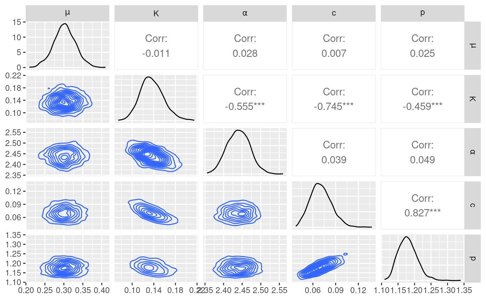
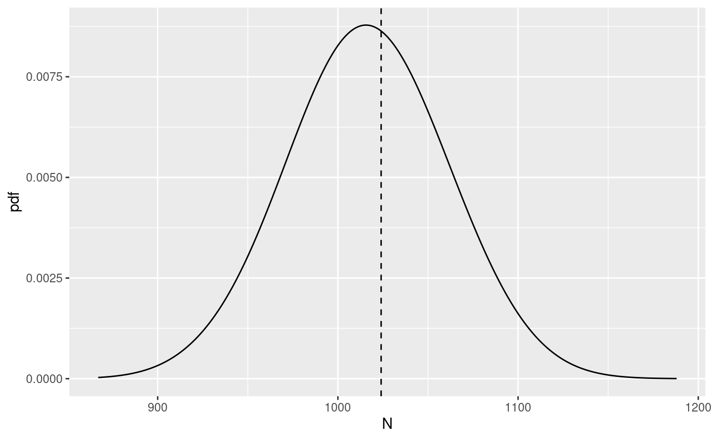
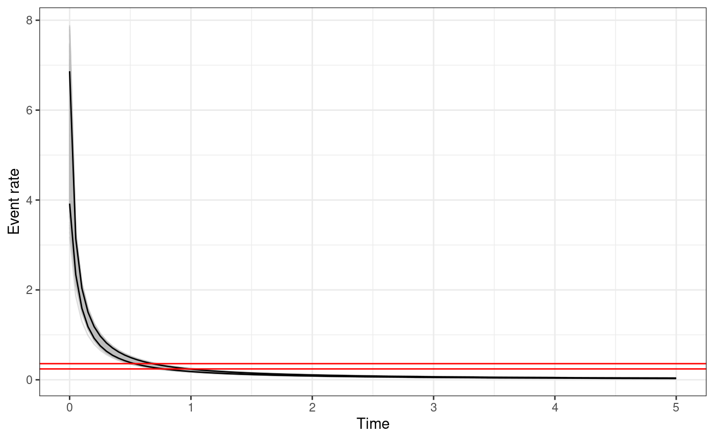
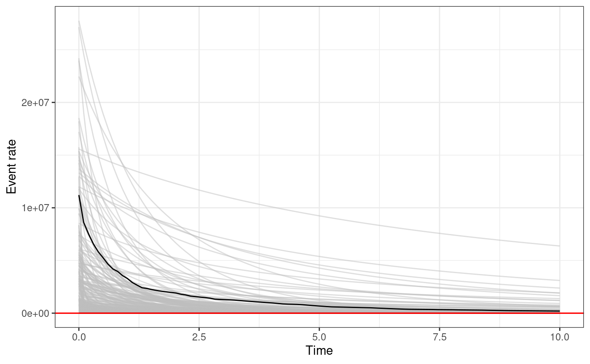
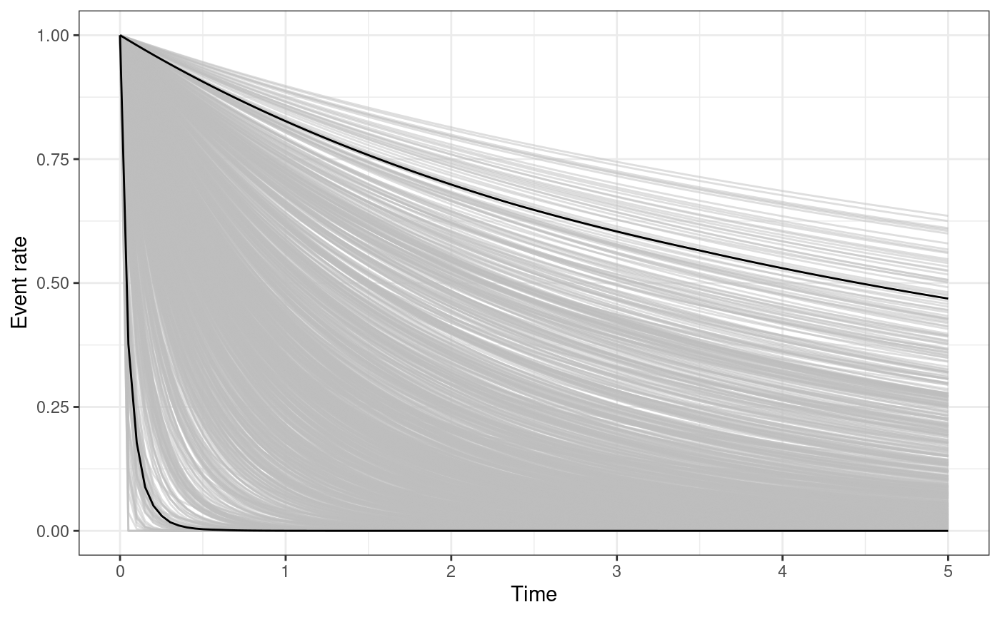
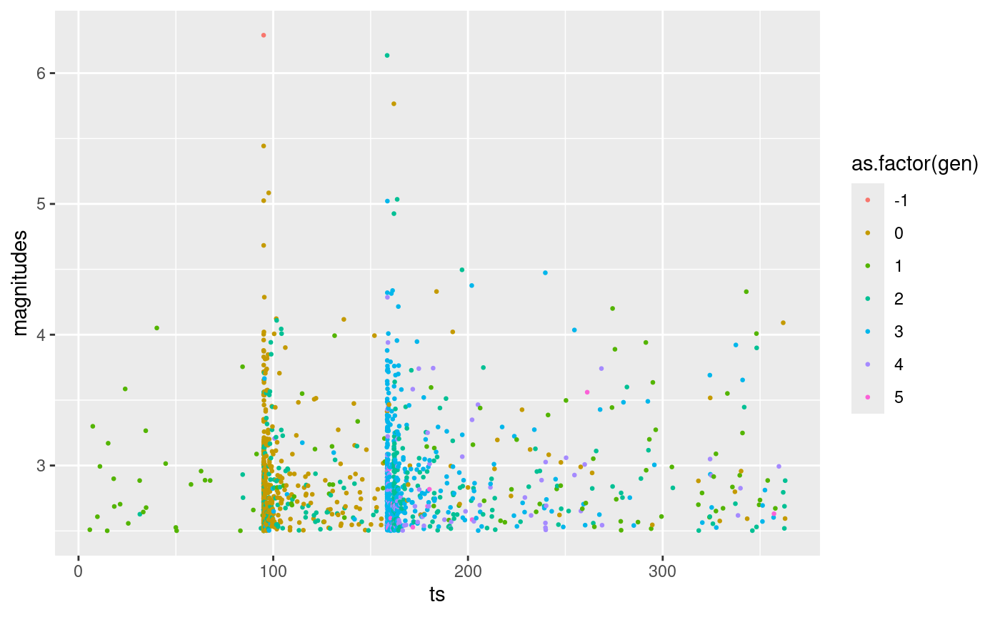
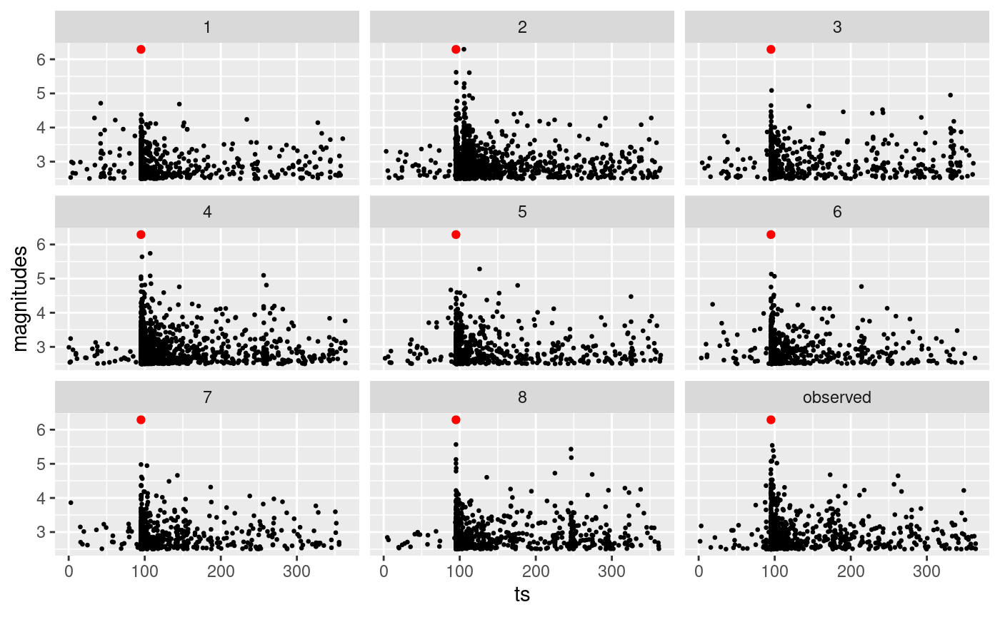
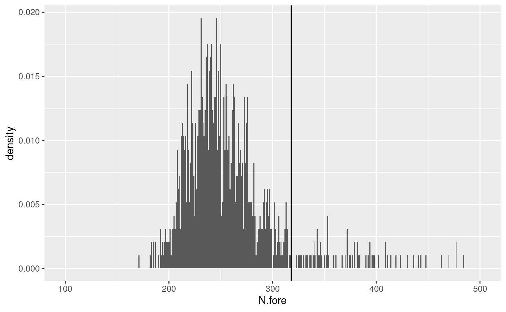

Tutorial on real data
Francesco Serafini
2023-06-27
Source:vignettes/articles/tutorial_real.Rmd
tutorial_real.Rmd
library(ETAS.inlabru)
library(ggplot2)
# Increase num.threads if you have more cores on your computer
INLA::inla.setOption(num.threads = 2)Introduction to ETAS model
In this tutorial, we show how to use the ETAS.inlabru
R-package to fit a temporal ETAS model on real earthquakes data. The
tutorial shows how to prepare the data, how to fit a model, how to
retrieve the posterior distribution of the parameters and the posterior
distribution of other quantities of interest, how to generate synthetic
catalogues from the fitted model, and how to produce forecasts of
seismicity.
The Epidemic-Type Aftershock Sequence (ETAS) model belongs to the family of Hawkes (or ) point processes. The temporal Hawkes process is a point process model with conditional intensity given by
\[ \lambda(t | \mathcal H_t) = \mu + \sum_{t_h \in \mathcal H_t} g(t- t_h) \] where \(\mathcal H_t\) is the history of the process up to time \(t\). Generally speaking \(\mathcal H_t\) contains all the events occurred before \(t\). The quantity \(\mu > 0\) is usually called the , and is interpreted as the rate at which events occur spontaneously. The function \(g(t-t_h)\) is called function (or excitation function, or simply kernel) and measures the influence of having an event in \(t_h\) on time \(t\). If we look at \(g(t-t_h)\) as a function of \(t\) is the intensity of the point process representing the offspring of the event in \(t_h\). In seismology the offspring of an event are called , the two terms will be used as synonyms. In essence, an Hawkes process model can be seen as the superposition of a background process with intensity \(\mu\) and all the aftershock processes generated by the observations in \(\mathcal H_t\) each one with intensity \(g(t-t_h)\). This makes Hawkes process model particularly suitable to describe phenomena in which an event has the ability to trigger additional events, phenomena characterized by cascades of events such as earthquakes, infectious diseases, wildfires, financial crisis, and similar.
The ETAS model is a particular instance of Hawkes process model which
has proven to be particularly suitable to model earthquake occurrence.
Earthquakes are usually described and modelled as marked time points
where the marking variable is the magnitude of the event. So the history
of the process is composed by time-magnitude pairs, namely \(\mathcal H_t = \{(t_h,m_h), h =
1,...,N_h\}\). Various slightly different ETAS formulations
exists, usually characterized by slightly different triggering
functions, the one that is implemented in the ETAS.inlabru
R-package has conditional intensity given by
\[ \lambda(t | \mathcal H_t) = \mu + \sum_{t_h \in \mathcal H_t} K \exp\{\alpha(m_h - M_0)\}\left(\frac{t - t_h}{c} + 1\right)^{-p} \] where \(M_0\) is the cutoff magnitude such that \(m_h \geq M_0\) for any \(h\). This value is decided a priori based on the quality of the catalogue used.
The parameters of the model are:
- \(\mu \geq 0\), the background rate
- \(K \geq 0\) a general productivity parameter, it plays a role in determining the average number of aftershocks induced by any event in the catalogue.
- \(\alpha \geq 0\) a magnitude scaling parameter, it determines how the number of aftershocks changes based on the magnitude of the event generating the aftershocks. It has to be non-negative to reflect the fact that stronger earthquakes generate more aftershocks.
- \(c > 0\) a time offset parameter, smaller values are associated with catalogues with fewer missing events.
- \(p \geq 1\) an aftershock decay parameter, it determines the rate at which the aftershock activity decreases over time. It has to be greater than 1 otherwise an event may generate an infinite number of aftershocks in an infinite interval of time which is thought to be unphysical.
Priors
As any other bayesian analysis we need to decide the priors of the parameters. The approximation method that we use considers the parameters in two different scales: the original ETAS scale, and the internal scale. The internal scale is used by the package to perform the calculations. In the internal scale the parameters does not have any constraint and have a standard normal distribution as prior. We need to set up the priors for the parameters in the ETAS scale. This is done by considering a copula transformation \(\eta(X)\) such that if \(X \sim N(0,1)\) then, \(\eta(X)\) has the desired distribution.
The ETAS.inlabru R-package provides four different
functions corresponding to three different distributions:
gamma_t(X, a, b)for a Gamma distribution with shape parameteraand rateb. The distribution is such that the mean is\texttt{a}/\texttt{b}and the variance is \(\texttt{a}/\texttt{b}^2\).unit_t(X, a, b)for a Uniform distribution betweenaandb.exp_t(X, r)for an Exponential distribution with rater.loggaus_t(X, m ,s)for a Log-Gaussian distribution with mean of the logarithmmand standard deviation of the logarithms.
The code below generate 1000 observations from a normal distribution, transform them using the functions provided by the package, and shows the empirical density estimated from the sample.
# obtain sample from standard normal distribution
X <- rnorm(1000)
# apply copula transformations
gamma.X <- gamma_t(X, 1, 2)
unif.X <- unif_t(X, 0, 1)
exp.X <- exp_t(X, 1)
loggaus.X <- loggaus_t(X, 0.5, 0.5)
# build data.frame for plotting
df.to.plot <- rbind(
data.frame(
value = X,
distribution = "Std Normal"
),
data.frame(
value = gamma.X,
distribution = "Gamma"
),
data.frame(
value = unif.X,
distribution = "Uniform"
),
data.frame(
value = exp.X,
distribution = "Exponential"
),
data.frame(
value = loggaus.X,
distribution = "Log-Gaussian"
)
)
# plot them
ggplot(df.to.plot, aes(value)) +
geom_histogram() +
theme_bw() +
facet_wrap(facets = ~distribution, scales = "free")
#> `stat_bin()` using `bins = 30`. Pick better value with `binwidth`.
The package also provide inverse functions to retrieve the value of a parameter in the internal scale if the value in the ETAS scale is provided. Below an example
inv_gamma_t(gamma_t(1.2, 1, 2), 1, 2)
#> [1] 1.2
inv_unif_t(unif_t(1.2, 1, 2), 1, 2)
#> [1] 1.2
inv_exp_t(exp_t(1.2, 1), 1)
#> [1] 1.2
inv_loggaus_t(loggaus_t(1.2, 1, 2), 1, 2)
#> [1] 1.2Once we have decided the priors that we are going to use in the
analysis, we need to store the corresponding copula transformations in a
list. The list one element for each parameter
of the model (\(5\)), and each element
of the list must have name corresponding to the parameter. The names are
fixed and should be mu, K, alpha,
c_, and p. The parameter \(c\) is referred as c_ to avoid
clashing names with the R function c(). It is useful to do
the same with the inverse functions also, this list will be used to set
the initial value of the parameters later. The code below assumes that
parameter \(\mu\) has a Gamma
distribution as prior with parameters \(0.3\) and \(0.6\), parameters \(K, \alpha,\) and \(c\) have a Uniform prior on \((0,10)\), while the parameter \(p\) has a Uniform prior on \((1,10)\).
# set copula transformations list
link.f <- list(
mu = \(x) gamma_t(x, 0.3, 0.6),
K = \(x) unif_t(x, 0, 10),
alpha = \(x) unif_t(x, 0, 10),
c_ = \(x) unif_t(x, 0, 10),
p = \(x) unif_t(x, 1, 10)
)
# set inverse copula transformations list
inv.link.f <- list(
mu = \(x) inv_gamma_t(x, 0.3, 0.6),
K = \(x) inv_unif_t(x, 0, 10),
alpha = \(x) inv_unif_t(x, 0, 10),
c_ = \(x) inv_unif_t(x, 0, 10),
p = \(x) inv_unif_t(x, 1, 10)
)L’Aquila seismic sequence
Earthquake data is stored in the so-called earthquake catalogues. Many different catalogues exists for the same region and there is no easy way to decide which one is better. Here, we provide the HOmogenized instRUmental Seismic (HORUS) catalogue from 1960 to 2020. It can be downloaded from http://horus.bo.ingv.it/. The whole Horus catalogue can be loaded using
# load ISIDE catalogue
horus <- read.table(
file = "data/HORUS.txt",
header = TRUE,
sep = ","
)
head(horus)
#> lon lat M time_string depth catalog_id event_id
#> 1 15.3000 39.3000 6.34 1960-01-03T20:19:34.00 290 -1 NA
#> 2 13.1667 43.1333 3.94 1960-01-04T09:20:00.00 0 -1 NA
#> 3 12.7000 46.4833 4.69 1960-01-06T15:17:34.00 4 -1 NA
#> 4 12.7000 46.4667 4.14 1960-01-06T15:20:53.00 0 -1 NA
#> 5 12.7500 46.4333 3.00 1960-01-06T15:31:00.00 0 -1 NA
#> 6 12.7500 46.4333 3.00 1960-01-06T15:45:00.00 0 -1 NAThe data reports for each earthquake the longitude (lon)
and latitude (lat) of the epicentre, the moment magnitude
(M), the time as a string (time_string), the
depth in kilometres (depth), and a catalogue and event
IDs.
To focus on the L’Aquila seismic sequence is sufficient to retain only the observations in a specific space-time-magnitude region that include the sequence of interest. For the L’Aquila sequence, we retain all the events with magnitude greater or equal than \(2.5\) happened during 2009 with longitude in \((10.5, 16)\) and latitude in \((40.5, 45)\). The L’Aquila sequence selected in this way should be composed by 1024 events. Any other seismic sequence can be selected similarly.
To do the selection is convenient to transform the time string in a
Date object and to select the rows of the Horus catalogue
verifying the conditions.
# transform time string in Date object
time_string <- gsub("T", " ", horus$time_string)
horus$time_date <- as.POSIXct(time_string,
format = "%Y-%m-%d %H:%M:%OS"
)
# set up parameters for selection
start.date <- as.POSIXct("2009-01-01 00:00:00", format = "%Y-%m-%d %H:%M:%OS")
end.date <- as.POSIXct("2010-01-01 00:00:00", format = "%Y-%m-%d %H:%M:%OS")
min.longitude <- 10.5
max.longitude <- 16
min.latitude <- 40.5
max.latitude <- 45
M0 <- 2.5
# set up conditions for selection
aquila.sel <- (horus$time_date >= start.date) &
(horus$time_date < end.date) &
(horus$lon >= min.longitude) &
(horus$lon <= max.longitude) &
(horus$lat >= min.latitude) &
(horus$lat <= max.latitude) &
(horus$M >= M0)
# select
aquila <- horus[aquila.sel, ]The data can be visually represented by plotting the time of each event against the magnitude. This shows the clustering of the observations in correspondance of high magnitude events.
ggplot(aquila, aes(time_date, M)) +
geom_point() +
theme_bw()L’Aquila seismic sequence, times versus magnitudes
Data preparation to model fitting
We need to prepare a data.frame to be used as input data
to fit the ETAS model. This data.frame must have three
columns: ts for the time difference between the starting
date and the occurrence time of the events (measured in days in this
example), magnitudes for the magnitude of the events, and
idx.p which is an index column with a different value for
each event. The names are fixed and should not be changed
# set up data.frame for model fitting
aquila.bru <- data.frame(
ts = as.numeric(difftime(aquila$time_date, start.date,
units = "days"
)),
magnitudes = aquila$M,
idx.p = 1:nrow(aquila)
)After that, we need to set up the initial values of the parameters
and the list containing the inlabru options to
be used. The initial values should be stored in a list with
elements th.mu, th.K, th.alpha,
th.c, and th.p which corresponds to the ETAS
parameters. The initial values must be provided in the internal scale
and therefore it is useful to retrieve them using the inverse copula
transformations that we set up before. In this way, we can find the
values of the parameters in the internal scale given the value of the
parameters in the ETAS scale. The example below uses \(\mu = 0.5, K = 0.1, \alpha = 1, c = 0.1,\)
and \(p = 1.1\) as initial values. It
is crucial to set initial values that do not cause numerical problems,
in general this is achieved by setting initial values that are not nor
from zero. The values provided below have worked well in various
examples.
# set up list of initial values
th.init <- list(
th.mu = inv.link.f$mu(0.5),
th.K = inv.link.f$K(0.1),
th.alpha = inv.link.f$alpha(1),
th.c = inv.link.f$c_(0.1),
th.p = inv.link.f$p(1.1)
)Lastly, we need to set the list of inlabru
options. The main elements of the list are :
-
bru_verbose: number indicating the type of diagnostic output. Set it to 0 for no output. -
bru_max_iter: maximum number of iterations. If we do not setmax_steptheinlabrualgorithm stops when the stopping criterion is met. However, settingmax_stepto values smaller than 1 forces the algorithm to run for exactlybru_max_iteriterations. -
num.threads: number of cores to be used in parallel. -
bru_method: for what is relevant here, the only thing that we may need to set is themax_stepargument. If the algorithm does not converge without fixing amax_stepthen we suggest to try to fix it to some value below 1, in our experience \(0.5\) or \(0.2\) works well. In the example below the line settingbru_methodis commented. -
bru_initial:listof initial values created before.
# set up list of bru options
bru.opt.list <- list(
bru_verbose = 3, # type of visual output
bru_max_iter = 70, # maximum number of iterations
num.threads = 2, # Increase this if your computer has multiple cores
# bru_method = list(max_step = 0.5),
bru_initial = th.init
) # parameters initial valuesModel fitting
The function Temporal.ETAS fit the ETAS model and
returns a bru object as output. The required inputs
are:
-
total.data:data.framecontaining the observed events. It have to be in the format described in the previous Section. -
M0: cutoff magnitude. All the events intotal.datamust have magnitude greater or equal to this number. -
T1: starting time of the time interval on which we want to fit the model. -
T2: end time of the time interval on which we want to fit the model. -
link.functions:listof copula transformation functions in the format described in previous sections. -
coef.t.,delta.t.,N.max.: parameters of the temporal binning. The binning strategy is described in Appendix B of the paper Approximation of Bayesian Hawkes process withinlabru. The parameters corresponds tocoef.t.\(=\delta\),delta.t.\(=\Delta\), andN.max.\(=n_{\max}\). -
bru.opt:listofinlabruoptions as described in the previous Section.
# set starting and time of the time interval used for model fitting. In this case, we use the interval covered by the data.
T1 <- 0
T2 <- max(aquila.bru$ts) + 0.2
# fit the model
aquila.fit <- Temporal.ETAS(
total.data = aquila.bru,
M0 = M0,
T1 = T1,
T2 = T2,
link.functions = link.f,
coef.t. = 1,
delta.t. = 0.1,
N.max. = 5,
bru.opt = bru.opt.list
)
#> Start creating grid...
#> Finished creating grid, time 2.575926Create input list
After a model has been fitted the package ETAS.inlabru
offers various functions to visually explore the output. They all
require in input a list. The list must have
different elements depending on the function we are going to use. To
retrieve the posterior of the parameters and to sample from the
posterior of the parameters we only need two elements:
-
model.fit: the output ofTemporal.ETAS -
link.functions: the list of copula transformations
# create input list to explore model output
input_list <- list(
model.fit = aquila.fit,
link.functions = link.f
)Check marginal posterior distributions
The function get_posterior_param can be use to retrieve
the marginal posteriors of the parameters in the ETAS scale. The
function returns a list with elements:
post.df: adata.framecontaining the posterior of the parameters. Thedata.framehas three columns,xwith the value of the parameter,ywith the corresponding value of the posterior, andparamthat indicates which ETAS parameterxandyare referring to.post.plot: aggplotobject containing the plot of the marginal posteriors of the parameters
# get marginal posterior information
post.list <- get_posterior_param(input.list = input_list)
# plot marginal posteriors
post.list$post.plotSample the joint posterior and make pair plot
The function post_sampling generate samples from the
joint posterior of ETAS parameters. The function takes in input:
-
input.list: a list with amodel.fitelement and alink.functionselements as described above. -
n.samp: number of posterior samples. -
max.batch: the number of posterior samples to be generated simultaneously. Ifn.samp\(>\)max.batch, then, the samples are generated in parallel in batches of maximum size equal tomax.batch. Default is \(1000\). -
ncore: number of cores to be used in parallel whenn.samp\(>\)max.batch.
The function returns a data.frame with columns
corresponding to the ETAS parameters
post.samp <- post_sampling(
input.list = input_list,
n.samp = 1000,
max.batch = 1000,
ncore = 1
)
head(post.samp)
#> mu K alpha c p
#> 1 0.3677738 0.1617029 2.425827 0.05822018 1.157604
#> 2 0.3445203 0.1262370 2.395503 0.09943504 1.239542
#> 3 0.2833900 0.1600875 2.408921 0.06421593 1.175880
#> 4 0.3042535 0.1205547 2.475632 0.07013789 1.171228
#> 5 0.3017681 0.1260403 2.456525 0.06481491 1.151355
#> 6 0.2927550 0.1327959 2.444883 0.07093366 1.198998The posterior samples can be used to analyse the correlation between
parameters. The function post_pairs_plot generate a pair
plot of the posterior samples taken as input. The function has 4
arguments but they do not need to be all specified. The input are:
-
post.samp:data.frameof samples from the joint posterior distribution of the parameters. If it isNULLthan the samples are generated by the function itself. -
input.list: an input list with argumentsmodel.fitandlink.functionsto be used to generate the posterior samples. This is used only ifpost.samp = NULL. Default isNULL. -
n.samp: number of posterior samples. If it isNULL, then the samples inpost.sampare used. Ifpost.sampisNULL, thenn.sampsamples are generated from the joint posterior. If bothpost.sampandn.sampare notNULLthenn.sampsamples are randomly (uniformly and with replacement) selected frompost.samp. Default isNULL -
max.batchthe number of posterior samples to be generated simultaneously. Same as before and only used whenpost.sampis NULL. Default isNULL
The function returns a list with two elements:
post.samp with the posterior samples, and
pair.plot which is a ggplot object containing
the pair plot.
pair.plot <- post_pairs_plot(
post.samp = post.samp,
input.list = NULL,
n.samp = NULL,
max.batch = 1000
)
#> Registered S3 method overwritten by 'GGally':
#> method from
#> +.gg ggplot2
pair.plot$pair.plot
Check posterior number of events
A quantity of interest is the posterior distribution of the number of
events. This can be accessed using the function
get_posterior_N which requires as only input a
list. However, the list needs to have some
additional elements with respect the one used until now. Specifically,
we need to add T12 with the extremes of the time interval
of which we want to calculate the number of events, M0 the
cutoff magnitude, and catalog.bru a data.frame
containing the observed events. The latter has to be in the same format
as total.data used for the Temporal.ETAS
function.
The function returns a list of three elements: post.plot
with a plot of the distribution, post.plot.shaded with a
plot of the distribution with shaded regions representing \(95\%\) interval for the distribution, and
post.df with the data.frame used to generate
the plots. The vertical line in the plots represent the number of events
in the catalog.bru element of the input list.
# set additional elements of the list
input_list$T12 <- c(T1, T2)
input_list$M0 <- M0
input_list$catalog.bru <- aquila.bru
N.post <- get_posterior_N(input.list = input_list)
N.post$post.plot
Posterior of the triggering function and Omori law
The functions triggering_fun_plot and
triggering_fun_plot_prior plot, respectively, the quantiles
of the posterior and prior distribution of the triggering function \(g(t-t_h, mh)\), namely,
\[ g(t - t_h, m_h) = K\exp\{\alpha(m_h - M_0)\}\left(\frac{t - t_h}{c} + 1\right)^{-p} \] The function takes in input
-
input.list: the input list as defined for the functions used previously. -
post.samp: adata.frameof samples from the posterior distribution of the parameters. If it isNULL, thenn.sampsamples are generated from the posterior. -
n.samp: number of posterior samples of the parameters to be used or generated. -
magnitude: the magnitude of the event (\(m_h\)). -
t.end: the maximum value of \(t\) for the plot. -
n.breaks: the number of breaks in which the interval \((0, \texttt{t.end})\) is divided.
The function returns a ggplot object. For each sample of
the parameters the triggering function between \(0\) and t.end is calculated.
The black solid lines represents the \(95\%\) posterior interval of the function,
the grey lines represent the triggering function calculated with the
posterior samples, and the horizontal red lines represent the \(95\%\) posterior interval of the background
rate \(\mu\).
The function triggering_fun_plot_prior does the same but
the value of the parameters are sampled according to the prior
distribution rather than the posterior, and therefore, we do not need to
specify a posterior samples data.frame.
triggering_fun_plot(
input.list = input_list,
post.samp = post.samp,
n.samp = NULL, magnitude = 4,
t.end = 5, n.breaks = 100
)
triggering_fun_plot_prior(input.list = input_list, magnitude = 4, n.samp = 1000, t.end = 10)
The functions omori_plot_posterior and
omori_plot_prior do the same as the functions
triggering_fun_plot and
triggering_fun_plot_prior but considering only
\[ \left(\frac{t- t_h}{c} + 1\right)^{-p} \] instead of the whole triggering function and without the background rate.
omori_plot_posterior(input.list = input_list, post.samp = post.samp, n.samp = NULL, t.end = 5)
omori_plot_prior(input.list = input_list, n.samp = 1000, t.end = 5)
Generate synthetic catalogues from model
An earthquake forecast is usually composed by a collection of
synthetic catalogues from a model. The package ETAS.inlabru
provides a function to generate synthetic catalogues for a given set of
parameters. This can be used both to produce forecasts or to simply
produce synthetic catalogues. The function to generate synthetic
catalogues is called generate_temporal_ETAS_synthetic which
takes as input
-
theta: alistof ETAS parameters with namesmu,K,alpha,c, andp, corresponding to the ETAS parameters. -
beta.p: the parameter of the magnitude distribution -
M0: cutoff magnitude, all the generated event will have magnitude greater thanM0. -
T1: starting time of the catalogue (the unit of measure depends on the unit used to fit the model). -
T2: end time of the catalogue (the unit of measure depends on the unit used to fit the model). -
Ht: set of known events. They can also be betweenT1andT2, this is useful when we want to generate catalogues with imposed events.
Regarding the magnitude distribution, it is an exponential, specificically we assume
\[ m - M_0 \sim \text{Exp}(\beta) \] The parameter \(\beta\) is usually estimated independently from the ETAS parameters. We use the maximum likelihood estimator for \(\beta\) which is given by
\[ \hat\beta = \frac{1}{\bar{m} - M_0} \] where \(\bar m\) is the mean of the observed magnitudes values.
# maximum likelihood estimator for beta
beta.p <- 1 / (mean(aquila.bru$magnitudes) - M0)The function returns a list of data.frame,
each element of the output list corresponds to a different
generation. The data.frame have three columns: occurence
time (ts), magnitude (magnitudes), a the
generation identifier (gen). The generation identifier uses
the following convention, \(-1\)
indicates the events in Ht with time between
T1 and T2, \(0\) indicates the first generation
offspring of the events with gen equal \(-1\), \(1\) indicates background events, \(2\) all the offspring of the events with
gen equal \(0\) or \(1\), \(3\)
indicates all the offspring of the events with gen equal
\(2\), \(4\) indicates all the offspring of the
events with gen equal \(3\), and so on. To obtain a unique
data.frame containing all the simulated events it is
sufficient to bind by rows all the generations.
Below an example in which we generate 1 synthetic catalogue using as parameters one of the posterior samples generated before. The catalogue covers the same time span as the L’Aquila catalogue and we impose the greatest event in the sequence.
synth.cat.list <- generate_temporal_ETAS_synthetic(
theta = post.samp[1, ], # ETAS parameters
beta.p = beta.p, # magnitude distribution parameter
M0 = M0, # cutoff magnitude
T1 = T1, # starting time
T2 = T2, # end time
Ht = aquila.bru[which.max(aquila.bru$magnitudes), ] # known events
)
# merge into unique data.frame
synth.cat.df <- do.call(rbind, synth.cat.list)
# order events by time
synth.cat.df <- synth.cat.df[order(synth.cat.df$ts), ]
ggplot(synth.cat.df, aes(ts, magnitudes, color = as.factor(gen))) +
geom_point(size = 0.5)
We can easily generate multiple catalogues. The code below generates 8 catalogues using different samples from the posterior distribution of the parameters. The red point indicates the event that we have imposed and the last panel represents the observed L’Aquila sequence.
set.seed(2)
n.cat <- 8
# generate catalogues as list of lists
multi.synth.cat.list <- lapply(seq_len(n.cat), \(x)
generate_temporal_ETAS_synthetic(
theta = post.samp[x, ],
beta.p = beta.p,
M0 = M0,
T1 = T1,
T2 = T2,
Ht = aquila.bru[which.max(aquila.bru$magnitudes), ]
))
# store catalogues as list of data.frames
multi.synth.cat.list.df <- lapply(multi.synth.cat.list, \(x) do.call(rbind, x))
# set catalogue identifier
multi.synth.cat.list.df <- lapply(seq_len(n.cat), \(x) cbind(multi.synth.cat.list.df[[x]],
cat.idx = x
))
# merge catalogues in unique data.frame
multi.synth.cat.df <- do.call(rbind, multi.synth.cat.list.df)
# we need to bing the synthetics with the observed catalogue for plotting
cat.df.for.plotting <- rbind(
multi.synth.cat.df,
cbind(aquila.bru[, c("ts", "magnitudes")],
gen = NA,
cat.idx = "observed"
)
)
# plot them
ggplot(cat.df.for.plotting, aes(ts, magnitudes)) +
geom_point(size = 0.5) +
geom_point(
data = aquila.bru[which.max(aquila.bru$magnitudes), ],
mapping = aes(ts, magnitudes),
color = "red"
) +
facet_wrap(facets = ~cat.idx)
Forecasting
An earthquake forecast is usually collection of synthetic catalogues
generated from a model. For bayesian models we can reflect the
uncertainty on the parameters values by generating each synthetic
catalogue composing the forecast using a different set of parameters
sampled from the join posterior distribution. We can generate forecasts
using the function Temporal.ETAS.forecast. The function
takes as input
-
post.samp: adata.frameof samples from the posterior distribution of the parameters with the same format described in previous sections. -
n.cat: the number of synthetic catalogues composing the forecast. Ifn.catis greater thannrow(post.samp), then the rows ofpost.sampare sampled uniformly and with replacementn.cattimes. Ifn.catis smaller thannrow(post.samp), then, then the rows ofpost.sampare sampled uniformly and without replacementn.cattimes. Ifn.catisNULLor equal tonrow(post.samp), then,post.sampis used as it is. -
ncore: the number of cores to be used to generate the synthetic catalogues in parallel.
The remaining inputs (beta.p, M0,
T1, T2, Ht) are the same as the
ones used in generate_temporal_ETAS_synthetic.
The output of the function is a list with two elements:
fore.df and n.cat. The element
fore.df is a data.frame with the synthetic
catalogues binded together by row, it is the same as
multi.synth.cat.df created before. The element
n.cat is just the number of catalogues generated. We need
n.cat because zero-events catalogues do not appear in
fore.df, and the corresponding cat.idx value
is missing. Therefore we need n.cat to recover the total
number of catalogues.
The code below creates a daily forecast for the 24 hours starting 1
minute after the event with the greatest magnitude in the sequence. The
starting date and end date of the forecast are expressed in the same
unit used in the catalogue to fit the model (days in this case). Day
zero correspond to start.date stated in the beginning of
the document which for the example is \(2009-01-01 00:00:00\). The forecast is
generated assuming known all the events in the catalogue occurred before
the forecasting period.
# express 1 minute in days
min.in.days <- 1 / (24 * 60)
# find time of the event with the greatest magnitude
t.max.mag <- aquila.bru$ts[which.max(aquila.bru$magnitudes)]
# set starting time of the forecasting period
T1.fore <- t.max.mag + min.in.days
# set forecast length
fore.length <- 1
# set end time of the forecasting period
T2.fore <- T1.fore + fore.length
# set known data
Ht.fore <- aquila.bru[aquila.bru$ts < T1.fore, ]
# produce forecast
daily.fore <- Temporal.ETAS.forecast(
post.samp = post.samp, # ETAS parameters posterior samples
n.cat = nrow(post.samp), # number of synthetic catalogues
beta.p = beta.p, # magnitude distribution parameter
M0 = M0, # cutoff magnitude
T1 = T1.fore, # forecast starting time
T2 = T2.fore, # forecast end time
Ht = Ht.fore, # known events
ncore = 3
) # number of coresWe can easily retrieve the predictive distribution of the number of
events in the forecasting period looking at the frequencies with which
the catalogue identifiers appears in the fore.df element.
Indeed, the number of rows of fore.df with the same
cat.idx value represents the number of events in that
synthetic catalogue. So, if the frequency with which each catalogue
identifier appears in fore.df$cat.idx correspond to the
number of events in that catalogue. This allows to easily retrieve the
predictive distribution of the number of events using the code below. We
remark that in this case we can not use the function table
to find the frequencies of elements of fore.df$cat.idx.
This is because the catalogue identifier of zero-events catalogues are
not present in fore.df$cat.idx. So using table
would lead to have zero probability of having zero events in a day,
quantity that is crucial if we are intersted in the probability of
earthquake activity (probability of having at least one event).
# find number of events per catalogue
N.fore <- vapply(
seq_len(daily.fore$n.cat),
\(x) sum(daily.fore$fore.df$cat.idx == x), 0
)
# find number of observed events in the forecasting period
N.obs <- sum(aquila.bru$ts >= T1.fore & aquila.bru$ts <= T2.fore)
# plot the distribution
ggplot() +
geom_histogram(aes(x = N.fore, y = after_stat(density)), binwidth = 1) +
geom_vline(xintercept = N.obs) +
xlim(100, 500)
#> Warning: Removed 28 rows containing non-finite values (`stat_bin()`).
#> Warning: Removed 2 rows containing missing values (`geom_bar()`).